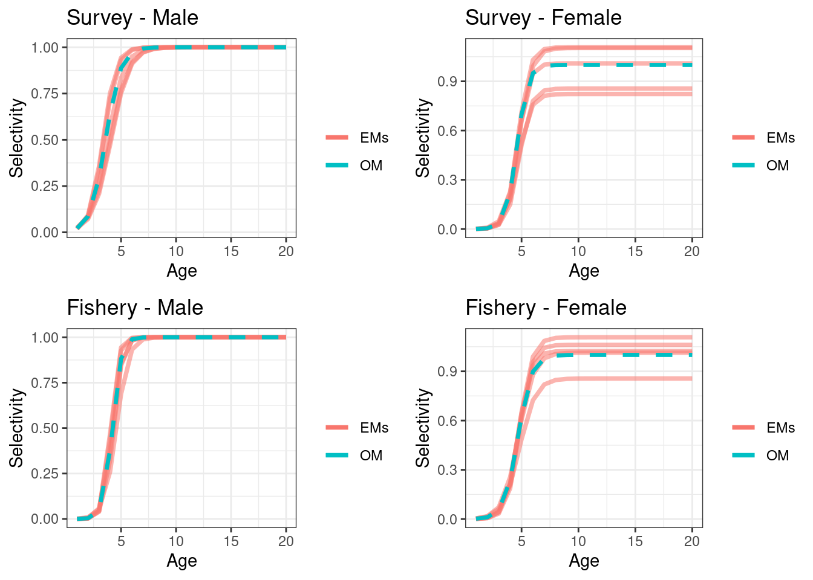
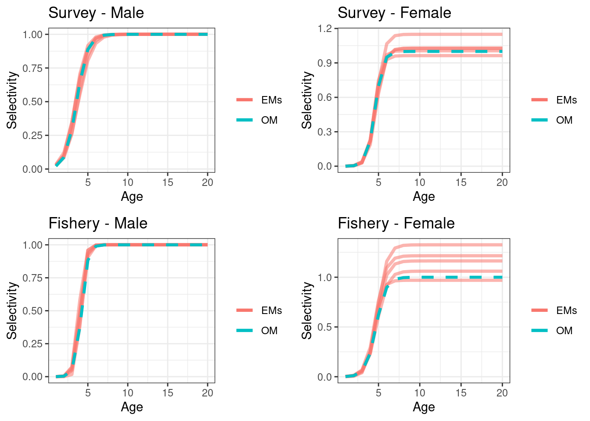
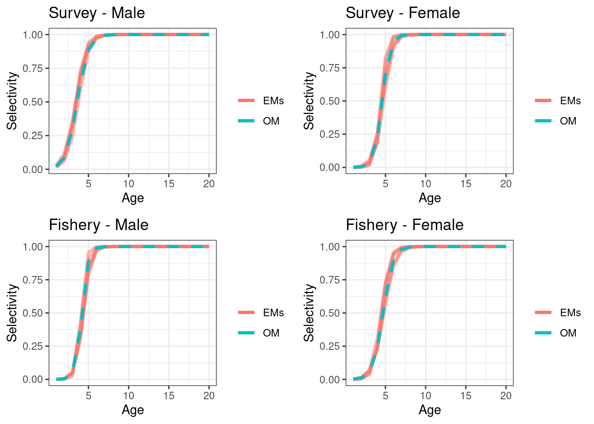
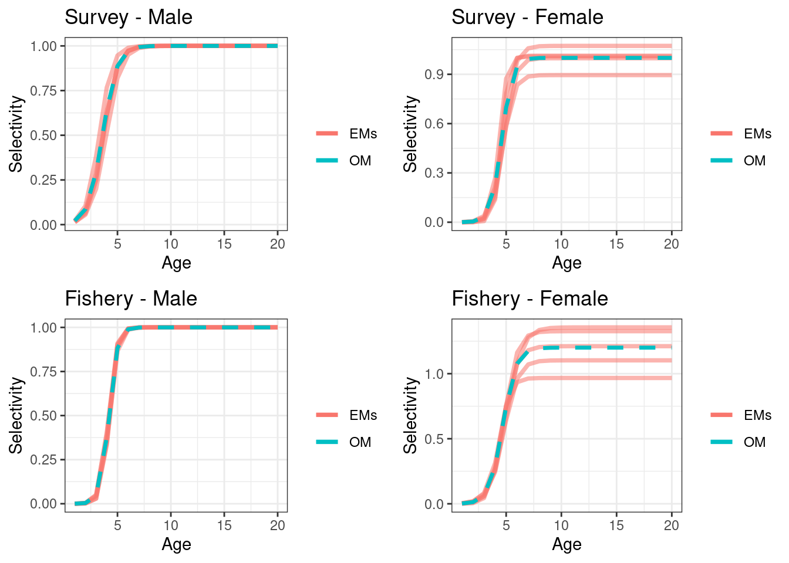
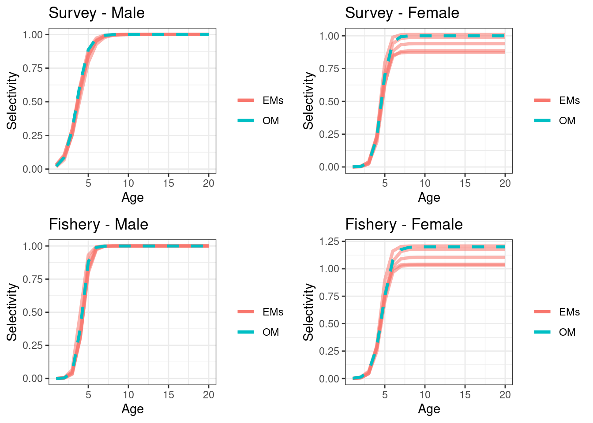
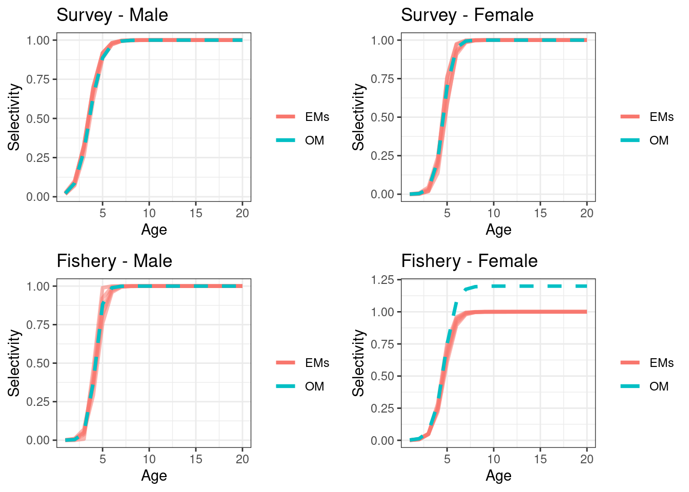

Chapter 10 Sex ratios in age and length composition data
An immediate improvement in the current stock assessment (Chapter 3) relates to how sexually disaggregated compositional data are handled. Currently LF’s are separated by sex (needed for the different growths) and age compositional data are aggregated over both sexes. Although LFs are disaggregated by sex and should (in theory) be sufficient to estimate sex specific selectivities. It is not ideal to use LFs to estimate age-based selectivities because older cohorts “smush” into single modes and age information is lost.
Before developing a spatially explicit model stock assessment model, I wanted to tidy some loose ends that may come back and bite me in the proverbial butt once we explore the spatially sex disaggregated stock assessment model in anger. These things are exponentially more easier to deal with in “simpler” models. My general intention is to drop length data when we have well sampled age data, currently they both go into the model together. For age composition data I want to structure the observations so that there is potential information on sex ratio. The current assessment can be given information on sex ratio for generating model predicted values which is similar to the approach in Ward et al. (2019). Howver, I personally think this should be dealt within the model.
I am aware of two approaches for supplying observations that in theory should provide information on sex ratio. The first (“Approach 1”) was taken from Casal2 (Doonan et al. 2016). This treats sexed composition data for a year as a single proportion i.e., proportions across all ages and sexes sum to one for each year,
\[
\boldsymbol{P}^k_{y} = \frac{(C^k_{a,y,1},C^k_{a,y,2})}{\sum_a \sum_s C^k_{a,y,s}}, \quad \sum \boldsymbol{P}^k_{y} = 1
\]
where, \(C^k_{a,y,1}\) is the catch at age (numbers) for males in year \(y\), age \(a\) and survey \(k\). \(\boldsymbol{P}^k_{y}\) is a proportion vector that sums to one that covers both sexes and corresponding ages. The likelihood contribution for this approach follows
\[
\boldsymbol{P}^k_{y} \sim Multinomial(\mathbb{E}[\boldsymbol{P}^k_{y}], N^{eff, k}_{y}) \ .
\]
where, \(N^{eff, k}_{y}\) is the effective sample size for this survey and year.
The second approach (“Approach 2”) is to treat composition for each sex seperately that is proportions at age or length for a sex will sum to one, but also provide a specific sex ratio observation over all ages or lengths as done in the New Zealand rock lobster stock assessment (Webber, Rudd, and Starr 2021).
\[ R^k_{y,s} = \frac{\sum_a C^k_{a,y,s}}{\sum_a \sum_s C^k_{a,y,s}}, \quad \sum_s R^k_{y,s} = 1 \] and, \[ P^k_{a, y,s} = \frac{C^k_{a,y,s}}{\sum_a C^k_{a,y,s}}, \quad \sum_a P^k_{a, y,s} = 1 \ . \] The likelihood assumptions for this model are, \[ R^k_{y,s} \sim Binomial(\mathbb{E}[R^k_{y,s}], \sum_s N^{eff, k}_{y,s}) \] and, \[ \boldsymbol{P}^k_{y,s} \sim Multinomial(\mathbb{E}[\boldsymbol{P}^k_{a, y,s}], N^{eff, k}_{y,s}) \ . \] where, \(N^{eff, k}_{y,s}\) is the effective sample size.
A simple simulation
To explore the utility of these two approaches we conducted a simple simulation using a sexually disaggregated age-structured model (see simulation section below). The Operating Model (OM) used in the simulation assumed a 50:50 sex ratio during the recruitment process however the OM did assume different growth and selectivity among the sexes.
Results
In summary both approaches resulted in similar estimates in selectivities and SSBs. I prefer Approach 1 as it is a single observation compared with Approach 2 which has two observation types (need to consider how to avoid double counting of samples), but this simulation showed at least within the very small assumptions explored here they resulted in similar performance. This was all I was after in order to move forward to the spatial model.
Another consideration about “Approach 2” is if the selectivity shape differs between sexes i.e., lower age at 50% retention. Then due to the sex ratio being derived by summing numbers over all ages, and the natural exponential decay in successive age-cohorts, selectivities that capture more younger fish will result in higher sex ratios. “Approach 1”
Future research that was not considered in this simple simulation
- LF observations with sexual dimorphism in growth. A possible reason LF’s could be influencing assessment output is due to mis-specified growth à la Minte-Vera et al. (2017)
- Sample size between the two approaches
- Actual sex ratio skewed in the recruitment process, rather than just a selectivity effect which was of focus in the following simulation
- Look at the effect on \(F\)’s I only summarised SSB and selectivities
- Look at some residuals to see if that is a way to discredit some of these models ### Operating Model (OM) Parameters {-}
set.seed(123)
n_sims = 5
bio_params = list(
ages = 1:20,
L_inf_m = 58,
K_m = 0.133,
t0_m = 0,
L_inf_f = 62,
K_f = 0.143,
t0_f = 0,
M = 0.15,
a_m = 2.18e-9, ## tonnes
b_m = 3.2,
a_f = 2.08e-9, ## tonnes
b_f = 3.3,
m_a50 = 2.3,
m_ato95 = 1.2,
sigma = 0.6,
h = 0.85,
sigma_r = 0.6,
R0 = 8234132,
plus_group = 1 # 0 = No, 1 = Yes
)
other_params = list(
s_a50_m = 3.6,
s_ato95_m = 2,
s_a50_f = 4.6,
s_ato95_f = 1.4,
s_q = 0.2,
s_alpha = 1,
f_a50_m = 4.2,
f_ato95_m = 1.17,
f_a50_f = 4.7,
f_ato95_f = 1.76,
f_alpha = 1,
ssb_prop_Z = 0.5,
survey_prop_Z = 0.5,
survey_age_error = c(0.5, 0.4), ## sd, rho (ignored if iid)
fishery_age_error = c(0.5, 0.4), ## sd, rho (ignored if iid)
survey_bio_cv = c(0.1)
)
ages = bio_params$ages
max_age = max(bio_params$ages)
n_years = 30
years = (2020 - n_years + 1):2020
n_ages = length(ages)
## annual fishing mortality
start_F = c(rlnorm(10, log(seq(from = 0.02, to = 0.1, length = 10)), 0.1), rlnorm(10, log(0.1), 0.1), rlnorm(10, log(0.07), 0.1))
recruit_devs = log(rlnorm(n_years, -0.5 * bio_params$sigma_r * bio_params$sigma_r, bio_params$sigma_r))Figure 10.1: Examples of the two approaches for the survey (top row) and fishery (bottom row). The black and red line in approach 1 will sum to one, where as the black line and red line in approach will each sum to one. Approach 2 has an extra observation which is the proportion male (not shown).
Scenario 1
The first simulation assumed the OM had 50:50 males and female sex ratio at recruitment, and selectivities were as described in the above OM section. We simulated 100 data sets for each of the two approach’s for sexually disaggregated compositional data outlined in the introduction. These were then fitted to in two EM’s, where the EM’s differed in the approach they used. Both EM’s estimated a scalar on the female selectivity that allowed females to be more or less selected compared to males for both the fishery and survey. This was done be introducing an estimable \(\alpha\) parameter into the selectivity. Males selectivities were constrained to have a max value = 1 using, \[\begin{equation} S^{male}_a = 1/(1+19^{(a_{50}-a)/a_{to95})}) \tag{10.1} \end{equation}\] where as the female was \[\begin{equation} S^{female}_a = \alpha/(1+19^{(a_{50}-a)/a_{to95})}) \tag{10.2} \end{equation}\]
Although this scenario assumed both male and female had the same max selectivity I wanted to see the effect of estimating this additional parameter.
A third EM (EM3) was also explored, this structured compositional data using Approach 1 but fixed the female \(\alpha\) = 1 in Equation (10.2). This is often the default approach. For scenario 1 this should be the best performing EM as it has the \(\alpha\) set at the values of the OM.
EM 1 (using approach 1)
## max gradient from 100 simualtions = 1.858256e-06
Figure 10.2: Absolute SSBs, red line OM (truth), black lines are the estimated values form EMs
Figure 10.3: Annual fishing mortality, red line OM (truth), black lines are the estimated values form EMs
EM 2 (using approach 2)
## max gradient from 100 simualtions = 5.591513e-11
Figure 10.4: Absolute SSBs, red line OM (truth), black lines are the estimated values form EMs
Figure 10.5: Annual fishing mortality, red line OM (truth), black lines are the estimated values form EMs
EM 3 (using approach 1 with female fixed at \(\alpha = 1\))
## max gradient from 100 simualtions = 6.455864e-07
Figure 10.6: Absolute SSBs, red line OM (truth), black lines are the estimated values form EMs
Figure 10.7: Annual fishing mortality, red line OM (truth), black lines are the estimated values form EMs
Scenario 2
The second scenario assumed sex ratio was 50:50 at recruitment and females were more selective than males to the fishery. This was done by setting \(\alpha\) = 1.2 in Equation (10.2).
true_pars$logit_f_alpha_f = logit_general(1.2, TMB_data$sel_alpha_bounds[1], TMB_data$sel_alpha_bounds[2])EM 1 (using approach 1)
## max gradient from 100 simualtions = 6.54662e-07
Figure 10.8: Absolute SSBs, red line OM (truth), black lines are the estimated values form EMs
Figure 10.9: Annual fishing mortality, red line OM (truth), black lines are the estimated values form EMs
EM 2 (using approach 2)
## max gradient from 100 simualtions = 3.796794e-07
Figure 10.10: Absolute SSBs, red line OM (truth), black lines are the estimated values form EMs
Figure 10.11: Annual fishing mortality, red line OM (truth), black lines are the estimated values form EMs
EM 3 (using approach 1 with female fixed at \(\alpha = 1\))
## max gradient from 100 simualtions = 2.748698e-07
Figure 10.12: Absolute SSBs, red line OM (truth), black lines are the estimated values form EMs
Figure 10.13: Annual fishing mortality, red line OM (truth), black lines are the estimated values form EMs